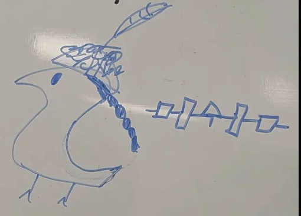

goihsagishö’öh! (Monkeys in Seneca)
Have new productive spacial suffix: -ither! Means towards. Elfminners don’t go manualither. “Cellither!” said June unto elvesmaxxers.
“Abstraction is a necessary step of any adaptation of new expressions” - Marcus.
LBJ is Alex’s favorite guy. Loves him. Also, if Sam drops out of school and joins ICE, Alex won’t call them puppy.
“Resident beaver, howska plead?
Need your testimony on the stand
Solemnly swear swear zero elves
So help you now raise raise your right hand” - Sofie

Zin will miss Seneca wug ^
Until next Wednesday, elfminners,
Hussein